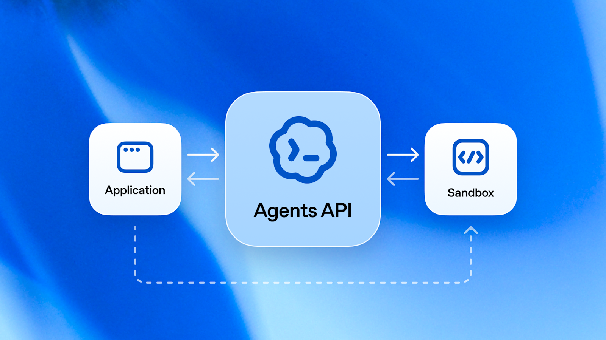
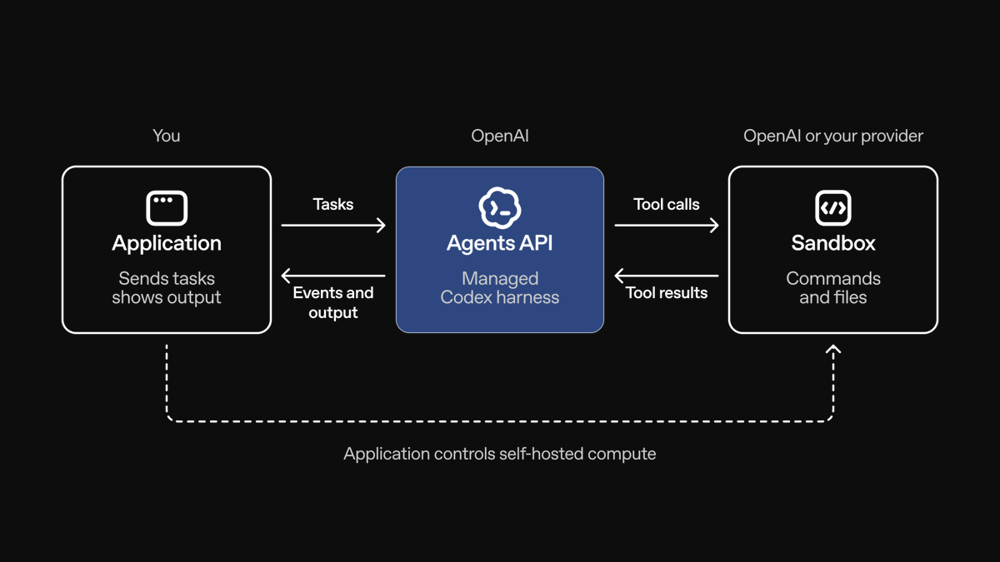
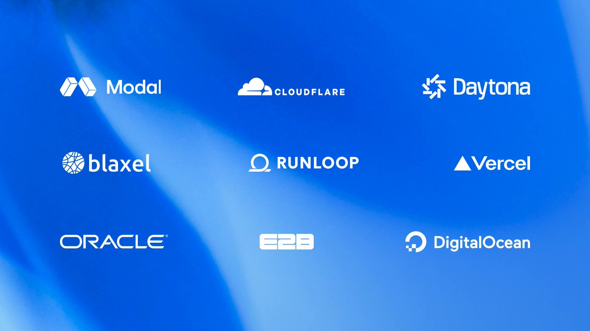
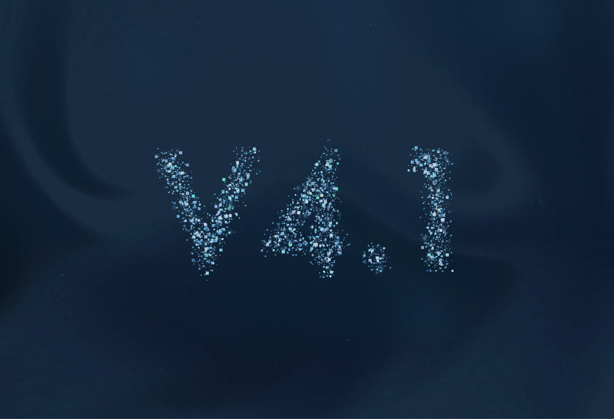
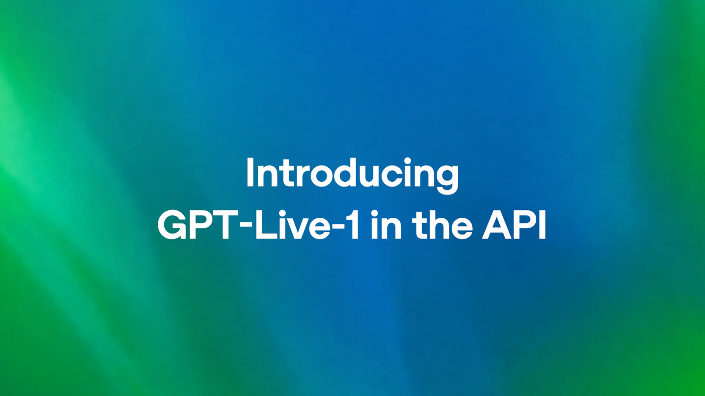
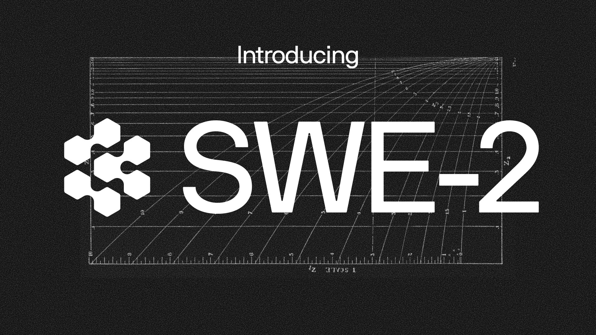
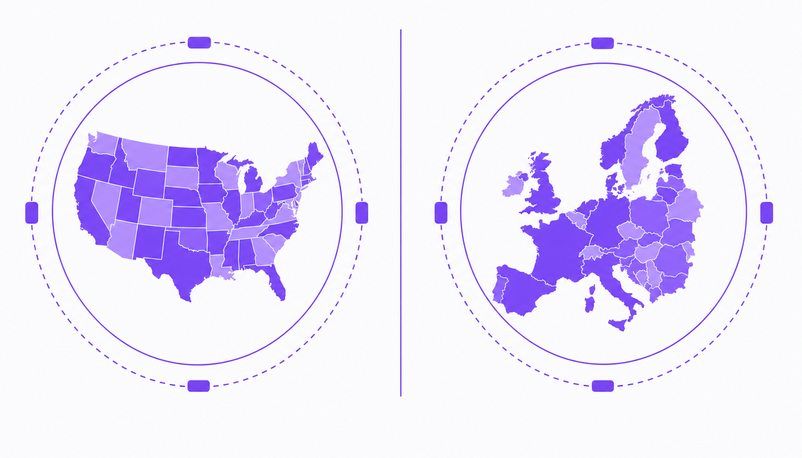

AI Intelligence Daily · 2026-09-11
专栏一｜新闻
1. OpenAI：Agents API 公测——Codex harness 托管化 + OpenAI-hosted sandboxes
事实
面向全体开发者的 public beta：一次 API 调用创建云端 Agent；OpenAI 托管 Codex harness（会话、编排、compaction、恢复）。环境三选：OpenAI-hosted sandbox、self_hosted、九家伙伴（Blaxel/Cloudflare/Daytona/DigitalOcean/E2B/Modal/Oracle/Runloop/Vercel）。支持 MCP、tool search、programmatic tool calling、multi_agent 子 Agent、steer。API 本身无额外平台费；hosted sandbox 走 Containers 价。目前仅美国数据驻留、不支持 ZDR。
判断
对 Work/Agent 引擎是当日最强信号：编排契约与环境插槽直接卖给开发者，而不只是桌面/聊天产品。



对你两条主线
- 智能体互联网：MCP + 可替换执行环境 ≈ 共享编排节点。
- Work/Agent 引擎：直接对表 session/compaction/steer/subagent/环境抽象。
2. DeepSeek：V4.1-Flash 正式 GA；价目生效；Pro→Flash 改 9/14；Harness 预览
事实
官网 News + X + changelog 同步：deepseek-flash；552B MoE；Causal Encoder–Decoder；KV 约 1/4 HBM、1/8 SSD。新价自 9/10 04:00 UTC；Pro 兼容路由改至 9/14 12:00 北京时间。Harness 开发者预览；媒体报 0.1.5 文件上传/Sidebar/插件。GitHub deepseek-ai/deepseek-harness 本轮约 ⭐219k。

3. OpenRouter：任意模型托管 Shell + Files API（beta）
事实
模型无关 Linux 沙箱；兼容 OpenAI shell / Anthropic bash；出站默认关 + allowlist；$0.0001/active second；beta 仅 global endpoint。与 Agents API「托管 harness」形成对照：这里卖的是可互换执行面。
4. 商务部回应 AA26-251A（对 09-10 早报 CORRECTION）
事实
商务部 09-09 21:28 答问：称美方指控于事无凭、于法无据；蒸馏为通行手段；遏压将反制。本报不作事实裁判。六家被点名企业仍无专稿。
5. OpenAI：GPT‑Live‑1 进入 API（全双工语音层）
事实
全双工听/说；可向后端文本模型委托推理与工具；telephony、打断与噪声处理。语音成为 Agent 入口层。

6. Cognition：SWE-2 + Devin Voice
事实
SWE-2 官方自报 FrontierCode 1.1 Main 50.0%、DeepSWE 1.1 73.0% 等；称从 Kimi K3 后训练；Desktop/CLI 可用。Devin Voice 官方 X 称由 GPT-Live + SWE-2 驱动。

7. OpenRouter：US In-Region Routing（端到端驻留）
事实
us.openrouter.ai / eu.openrouter.ai：区域内解密、失败关闭不跨区；Business/Enterprise；区域端禁用会送出数据的 server tools。

专栏二｜话题热议
T1–T4 摘要
- Agents API：开发者热议「不用自建编排」——X 故事
- DeepSeek Flash：成本与 Pro 退场——官方发布驱动
- GPT-Live / Devin Voice：语音入口共振
- AA26 ↔ 商务部：蒸馏叙事双边对撞（不作事实裁判）
专栏三｜开源雷达
deepseek-ai/deepseek-harness⭐219,132 — Harness 官方仓openai/codex⭐123,109 — Agents API 开源基础pascalorg/editor⭐23,253 ·tigerless-labs/agent-memory⭐840Tencent/teamai-cli⭐3,773 ·ayghri/i-have-adhd⭐38,247- Argus：lbx154/Argus ⭐296 · microsoft/ArgusAgent ⭐121
星数为 gh api 本轮核验，禁止把社区口头「很火」当数据。
趋势 · 吸收 · 跟踪
趋势
- Harness 产品化三分天下（OpenAI 托管 / DeepSeek 自有 / OpenRouter 执行面）
- 编排与执行环境解耦成为默认架构问题
- 语音入口叠到 Coding/Cloud Agent
- Flash / SWE 自研模型继续打 Pareto
- 地缘合规与驻留工程化并行
对智能体互联网
编排节点与执行节点可发现可替换；驻留要问解密点与工具管辖权；MCP 仍是默认插槽。
对 Work / Agent 引擎
优先对表 Agents API 契约；环境抽象与出站策略；模型—Harness 联合优化。
继续跟踪
Agents API GA · DeepSeek 9/14 路由 · OpenRouter beta→GA · AA26 双边 · GPT-Live/SWE-2 · METR/Muse/MiMo/Kimi/NS
价格雷达
- DeepSeek Flash 新价 + 9/14 Pro→Flash
- Agents API 无平台费；Containers 价目适用于 hosted sandbox
- OpenRouter Shell $0.0001/active sec